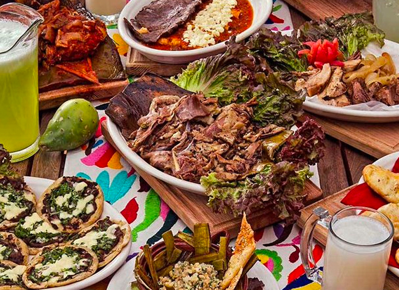
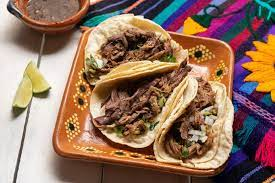
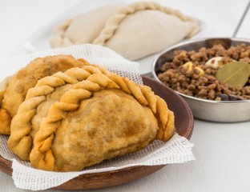

La gatronomia de Hidalgo
🌮 1. Pastes
Son el platillo más famoso del estado.
Es una empanada de origen inglés (por los mineros de Cornualles que llegaron a Pachuca y Real del Monte en el siglo XIX).
El relleno tradicional es de papa con carne, pero también los hay de frijol, mole, piña y muchos sabores más.
🍲 2. Barbacoa
Una de las especialidades hidalguenses más reconocidas.
Se prepara con carne de borrego (cordero) cocida bajo tierra en horno de piedra, envuelta en pencas de maguey.
Se acompaña con consomé, tortillas, salsas y nopales.
🌵 3. Ximbó
Platillo indígena tradicional.
Se hace con carne de pollo, cerdo o res, adobada, envuelta en hojas de maguey y cocida al vapor o al horno.
Se suele preparar en fiestas o eventos especiales.
🐛 4. Chinicuiles y Escamoles
Insectos comestibles que se consumen desde la época prehispánica.
Chinicuiles: Gusanos rojos del maguey, se comen fritos o en tacos.
Escamoles: Huevos de hormiga, considerados un manjar. Se comen con mantequilla, epazote o en quesadillas.
🍜 5. Mixiotes
Carne (pollo, conejo, borrego, etc.) marinada con chiles y especias, envuelta en la membrana delgada del maguey (el mixiote).
Se cuece al vapor, tiene un sabor muy especial.
🍞 6. Dulces típicos
Ate de membrillo, dulce de calabaza, panes de pulque y cocoles (panecillos tradicionales).
También se producen nieves artesanales, especialmente en Huasca y otros pueblos mágicos.
☕ 7. Bebidas tradicionales
Pulque: Bebida fermentada del maguey, muy tradicional en comunidades otomíes.
Atole, champurrado, y aguas frescas.